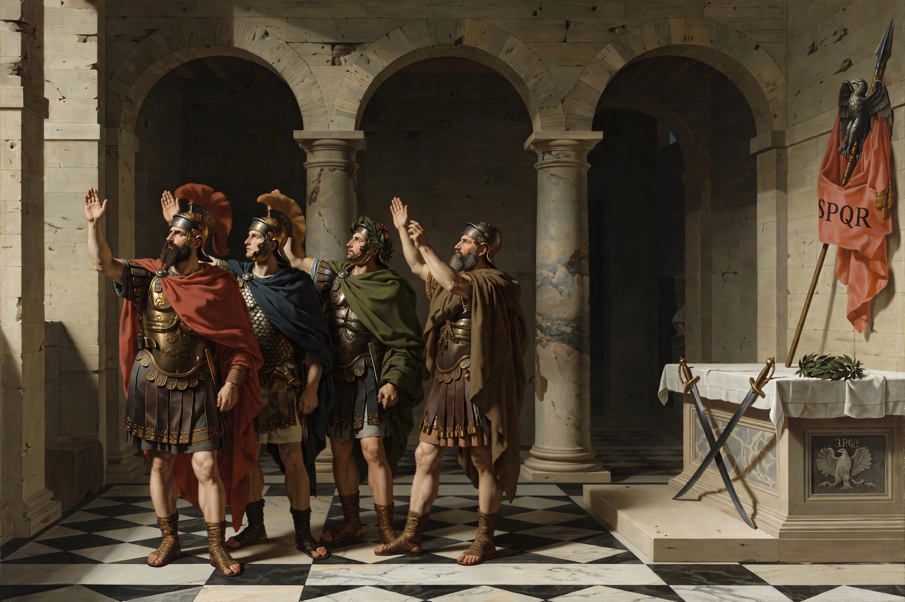

From Wikipedia, the free encyclopedia
| Years active | c. 1750 – early 19th century (later revivals) |
|---|---|
| Location | Europe and the Americas |
| Influences | Classical antiquity, Renaissance, Enlightenment, excavations at Pompeii and Herculaneum |
| Major figures | Jacques-Louis David, Jean-Auguste-Dominique Ingres, Antonio Canova, Karl Friedrich Schinkel |

Neoclassicism was a Western cultural movement in the decorative and visual arts, literature, theatre, music, and architecture that drew inspiration from the art and culture of classical antiquity. It was born in Rome in the mid-18th century, in reaction against the sensuous and frivolous Rococo style, and reached its height in the 1780s–1800s.
The movement was fueled by the writings of Johann Joachim Winckelmann, the excavations of Herculaneum (1738) and Pompeii (1748), and Enlightenment ideals of reason, civic virtue, and moral seriousness. Neoclassical art favored clear outlines, balanced composition, restrained emotion, and subjects drawn from Greek and Roman history and myth.
Jacques-Louis David's Oath of the Horatii (1784) became the movement's manifesto; his pupils and followers, including Ingres, carried the style into the 19th century. In sculpture, Antonio Canova and Bertel Thorvaldsen produced marble works of idealized classical form. In Britain and America, Neoclassical taste shaped everything from Robert Adam's interiors to Thomas Jefferson's architecture.
Neoclassical architecture — the Panthéon in Paris, Schinkel's Berlin buildings, the United States Capitol, and countless banks, museums, and courthouses — adapted Greek temple forms and Roman grandeur to modern civic purposes, and remained influential through successive revivals into the 20th century.